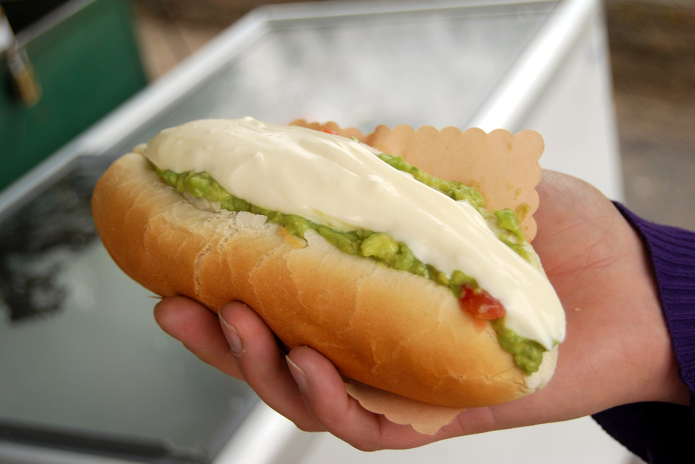

Completo!

Completo, mejor cuando se le añade mostaza y ketchup
Una buena opción para pasar el hambre: solo hace falta echarle mostaza y ketchup encima (a elección) junto con unas papas fritas
y quedas listo.
Algunos le echan chucrut, pebre u otras weás raras pero eso es considerado un sacrilegio.
Ingredientes
Básicos
- Pan
- Vienesa
- Tomate
- Palta
- mayonesa
Opcionales
Sacrílegos
- Chucrut
- Pebre
- Ají
- Otras weás raras
Preparación
- Cocer la vienesa y tostar el pan
- moler la palta y echarle un poco de sal
- picar tomate
- echarle la vienesa al pan
- echarle el tomate al pan encima de la vienesa
- echarle palta al pan encima del tomate
- echarle mayo al pan encima de la palta
~Volver a la página principal~